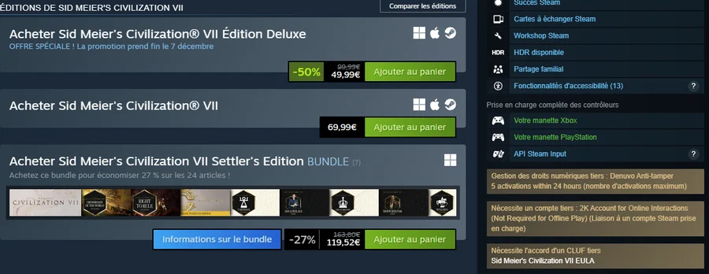

1
Repérer Denuvo sur la page Steam
Page Steam du jeu › Colonne de droite › Gestion des droits numériques tiers
Fais défiler la page du jeu : sous les fonctionnalités et les manettes, des encadrés beiges listent ce que l'éditeur impose. Gestion des droits numériques tiers : Denuvo Anti-tamper signale Denuvo, avec parfois une limite d'activations. Juste en dessous, tu peux voir un compte tiers obligatoire (ici un compte 2K, pas nécessaire hors ligne).
